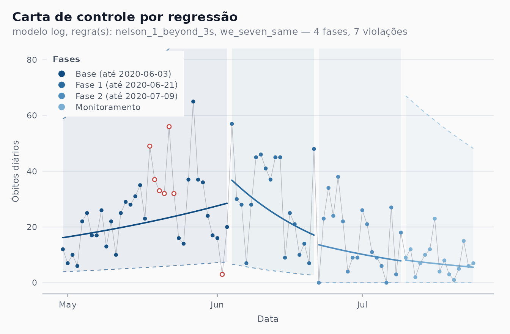

Simulating prospective monitoring with the seven-point rule
Source:vignettes/prospective-replay.Rmd
prospective-replay.RmdIssue
#3 asks to redo “the simulation study of the article” with the
package. This vignette does that in two steps: it replays, day by day,
the prospective use of the seven-point rule that the articles call a
simulation, and it then runs the Monte Carlo study that the articles do
not contain, to measure how that strategy behaves when the truth is
known. The charts themselves are rebuilt in
vignette("article-charts").
1. What “simulação” means in the articles
Neither paper of Ferraz et al. (2020) has a Monte Carlo study. Their “simulation” is a replay of history. The SBPO paper uses the shift rule “para simular um monitoramento prospectivo” of Brazil’s deaths, and says of Recife that Fig. 4 is built “simulando o monitoramento prospectivo dos dados, apenas com a regra de deslocamento”. The RBE paper describes it as “uma abordagem adaptativa em que, ao analisar o histórico de um indicador, sejam escolhidos pontos de forma a definir fases, simulando uma estratégia de monitoramento prospectiva”: the first 10 days give the initial parameters, centre line and limits are projected over the following days, the rule is applied to them, a new phase opens on the first date after a run of seven points on one side of the centre line, and the algorithm is applied again to the new phase.
The distinction matters because the retrospective chart and the
prospective one see different data. shewhart_regression()
fits every phase to all of its points, including days that had
not happened when the phase began, and phase_rule searches
for runs around those refitted lines. An analyst in May 2020 only had
the projection of a line fitted to the past. A replay has to reproduce
that restriction; otherwise it tells us how the chart reads with
hindsight, not how it would have worked.
2. The replay, done explicitly
The loop
The articles’ description translates directly into Phase I / Phase
II. For each phase: calibrate() a single phase
(phase_changes = integer(0)) on its first days,
monitor() everything after them, and look for the first
seven-point run in the monitored rows. The new phase starts the day
after the run, and the loop repeats. The limits of a phase are
frozen at its calibration window.
replay_frozen <- function(d, base = 10, k = 10, rule = "we_seven_same") {
n <- nrow(d); s <- 1L; size <- base; starts <- d$date[0]
repeat {
end <- s + size - 1L
if (end >= n) break
cal <- calibrate(d[s:end, ], chart = "regression",
value = new_deaths, index = date,
model = "log", limits_scale = "model",
phase_changes = integer(0), rules = rule)
mon <- monitor(d[(end + 1L):n, ], cal)
hit <- which(mon$augmented[[paste0(".flag_", rule)]])
if (length(hit) == 0L) break
s <- end + hit[1] + 1L # first day after the run
if (s > n) break
starts <- c(starts, d$date[s]); size <- k
}
starts
}A second reading keeps the phase open to new information: every day,
the current phase is refitted on all the days seen so far and
today’s count is compared with that fit’s projection for today. The rule
then runs on these one-step-ahead comparisons. This is also
calibrate() and monitor(), one day at a
time:
replay_expanding <- function(d, base = 10, k = 10, len = 7L) {
n <- nrow(d); s <- 1L; size <- base; starts <- d$date[0]
side <- numeric(0); t <- s + size
while (t <= n) {
cal <- calibrate(d[s:(t - 1L), ], chart = "regression",
value = new_deaths, index = date,
model = "log", limits_scale = "model",
phase_changes = integer(0), rules = "we_seven_same")
today <- monitor(d[t, ], cal)$augmented
side <- c(side, sign(today$.model_value - today$.model_center))
m <- length(side)
if (m >= len && abs(sum(side[(m - len + 1L):m])) == len) {
s <- t + 1L # first day after the run
if (s > n) break
starts <- c(starts, d$date[s]); size <- k
side <- numeric(0); t <- s + size
} else {
t <- t + 1L
}
}
starts
}Recife and Brazil
The windows of the SBPO figures, with their 12-day base; each later phase is calibrated on its first 10 days, as the RBE paper does with the base.
rec <- subset(cvd_recife, date >= as.Date("2020-04-30") &
date <= as.Date("2020-07-24"))
br <- subset(cvd_brazil, region == "BR" &
date >= as.Date("2020-03-16") & date <= as.Date("2020-07-24"))
one_shot <- function(d) {
fit <- shewhart_regression(d, value = new_deaths, index = date,
model = "log", limits_scale = "model",
start_base = 12, phase_rule = "we_seven_same")
fit$augmented$date[!duplicated(fit$augmented$.phase)][-1]
}
article <- list(
Recife = as.Date(c("2020-05-12", "2020-05-19", "2020-06-05",
"2020-06-16", "2020-06-23", "2020-07-05")),
Brazil = as.Date(c("2020-03-28", "2020-04-05", "2020-04-13",
"2020-05-17", "2020-05-28", "2020-06-13"))
)
system.time(runs <- list(
Recife = list(frozen = replay_frozen(rec, base = 12),
expanding = replay_expanding(rec, base = 12),
one_shot = one_shot(rec)),
Brazil = list(frozen = replay_frozen(br, base = 12),
expanding = replay_expanding(br, base = 12),
one_shot = one_shot(br))
))
#> user system elapsed
#> 2.664 0.023 2.688
show_dates <- function(x, ref) {
if (length(x) == 0L) return("none")
gap <- vapply(x, function(z) {
dd <- as.numeric(z - ref); dd[which.min(abs(dd))]
}, numeric(1))
paste0(format(x, "%m-%d"), " (", sprintf("%+d", as.integer(gap)), ")",
collapse = ", ")
}
tab <- do.call(rbind, lapply(names(article), function(city) {
data.frame(
series = city,
article = paste(format(article[[city]], "%m-%d"), collapse = ", "),
frozen = show_dates(runs[[city]]$frozen, article[[city]]),
expanding = show_dates(runs[[city]]$expanding, article[[city]]),
one_shot = show_dates(runs[[city]]$one_shot, article[[city]])
)
}))
knitr::kable(tab, col.names = c("Series", "Article (phase starts)",
"Replay, frozen limits", "Replay, refit daily", "phase_rule (one shot)"))| Series | Article (phase starts) | Replay, frozen limits | Replay, refit daily | phase_rule (one shot) |
|---|---|---|---|---|
| Recife | 05-12, 05-19, 06-05, 06-16, 06-23, 07-05 | 06-04 (-1), 06-22 (-1), 07-10 (+5) | 06-04 (-1) | 05-12 (+0), 06-15 (-1) |
| Brazil | 03-28, 04-05, 04-13, 05-17, 05-28, 06-13 | 04-04 (-1), 04-30 (+17), 05-17 (+0), 06-12 (-1), 07-15 (+32) | 04-04 (-1), 05-27 (-1) | 03-28 (+0), 04-05 (+0), 04-13 (+0), 04-21 (+8), 04-29 (+16), 05-07 (-10) |
In brackets, the distance in days to the nearest phase start of the article. The one-shot detection opens its first phase at the end of the base by construction; the replays only cut when a run is seen.
How close is the replay to the article?
Not very, and the reason is instructive. The frozen replay lands on or one day from some of the article’s dates (4 and 22 June in Recife; 4 April, 17 May and 12 June in Brazil) but misses others and adds cuts of its own; refitting every day produces fewer cuts, each within a day of an article date; the one-shot detection reproduces the April dates of Brazil exactly and then over-cuts. None reproduces the article, and none can: Recife’s Phases 1 and 4 last 7 days and Brazil’s Phases 2 and 3 last 8. A prospective seven-point rule needs a phase’s calibration days plus seven judged days before it can close that phase, so no strictly prospective version of the rule produces phases this short.
What the article’s dates do satisfy is visible if we fit each finished phase on all its days and project it over the ten days after its end:
after_end <- function(d, ends) {
starts <- c(d$date[1], ends + 1)
vapply(seq_along(ends), function(j) {
cal <- calibrate(d[d$date >= starts[j] & d$date <= ends[j], ],
chart = "regression", value = new_deaths, index = date,
model = "log", limits_scale = "model",
phase_changes = integer(0), rules = "we_seven_same")
nxt <- monitor(head(d[d$date > ends[j], ], 10), cal)$augmented
paste(ifelse(nxt$.model_value > nxt$.model_center, "+", "-"),
collapse = "")
}, character(1))
}
data.frame(
phase_end = format(article$Recife - 1),
next_10_days = after_end(rec, article$Recife - 1)
)
#> phase_end next_10_days
#> 1 2020-05-11 +++++-+++-
#> 2 2020-05-18 ---+------
#> 3 2020-06-04 ++-+++++++
#> 4 2020-06-15 -----+----
#> 5 2020-06-22 ++++++++++
#> 6 2020-07-04 --+-+++-++After most boundaries the following days fall almost entirely on one
side of the projection of the phase just finished: the article puts each
cut where the new data start to leave the old line, a position
that can only be recognised a week or more later. This is the expert
re-reading that the SBPO paper describes (“após acumular informações
suficientes, haja uma reavaliação desses momentos”), and the web
platform, where phases are clicked on the chart, allowed it. The
residual differences in single days also reflect the data vintage:
cvd_recife and cvd_brazil are later
compilations than the bulletins the articles used.
The chart the replay produces
The frozen replay’s phases for Recife, drawn by
shewhart_regression() (each phase then refitted on all its
days, as in the articles):
fit_replay <- shewhart_regression(
rec, value = new_deaths, index = date,
model = "log", limits_scale = "model", lower_bound = 0,
phase_changes = runs$Recife$frozen,
rules = c("nelson_1_beyond_3s", "we_seven_same"), locale = "pt"
)
autoplot(fit_replay, phase_dates = TRUE, legend_position = "inside") +
coord_cartesian(ylim = c(0, 80)) +
labs(x = "Data", y = "\u00d3bitos di\u00e1rios")
The base phase runs to 3 June: its first 12 days projected a gentle rise, and no seven-day run left that projection until the end of May. Refitted on all its days, the same phase shows the May peak as a cluster of points above the upper limit, which is where the article opened its Phases 1 and 2.
3. A Monte Carlo evaluation of the strategy
The replay says what the rule did on one realisation of history. To know how it behaves we need many realisations with a known truth.
Design
Daily counts
,
,
with
piecewise linear: growth at 5% a day from
to day 40, a plateau from day 41 (about 35 deaths a day), and a decline
of 3% a day from day 76. The true changes are on days 41 and 76. Each
series is replayed with a 10-day base and 10-day calibrations, with the
seven-point rule and, for comparison, the nine-point rule
nelson_2_nine_same. For every run we record:
- whether a phase was opened before day 41 (a spurious phase: its run is made only of pre-change days);
- the detection delay of each change: the number of days from the change to the day the first run after it closes, counting the day of the change as day 1 (a run may begin with a few pre-change days, so delays shorter than the run occur), and a change as missed if no run closes before the next change (or the end of the series).
A fast replay, identical to the package loop
The package loop of section 2 refits a
shewhart_regression() object every time, which is too slow
for thousands of series. The same computation fits in a few lines of
base R: least squares of
on the day within the phase, and the sign of each day against its
projection. The chunk below checks that it returns exactly the phase
starts of the package loop on the real data, for both variants and both
rules.
first_run <- function(side, len) {
r <- rle(side)
ok <- which(r$values != 0 & r$lengths >= len)
if (length(ok) == 0L) return(NA_integer_)
j <- ok[1]
cumsum(r$lengths)[j] - r$lengths[j] + len
}
replay_fast <- function(y, base = 10, k = 10, len = 7L,
variant = c("frozen", "expanding")) {
variant <- match.arg(variant)
g <- log1p(y); n <- length(g); s <- 1L; size <- base
starts <- integer(0)
repeat {
end <- s + size - 1L
if (end >= n) break
if (variant == "frozen") {
b <- stats::lm.fit(cbind(1, seq_len(size)), g[s:end])$coefficients
proj <- b[1] + b[2] * (((end + 1L):n) - s + 1L)
} else {
# fit on days s..t-1 for every t, by cumulative sums
gg <- g[s:(n - 1L)]; m <- seq_along(gg)
sy <- cumsum(gg); sxy <- cumsum(m * gg)
sx <- m * (m + 1) / 2; sxx <- m * (m + 1) * (2 * m + 1) / 6
b1 <- (m * sxy - sx * sy) / (m * sxx - sx^2)
b0 <- (sy - b1 * sx) / m
proj <- (b0 + b1 * (m + 1))[m >= size]
}
h <- first_run(sign(g[(end + 1L):n] - proj), len)
if (is.na(h)) break
s <- end + h + 1L
if (s > n) break
starts <- c(starts, s); size <- k
}
starts
}
stopifnot(
identical(rec$date[replay_fast(rec$new_deaths, base = 12)],
runs$Recife$frozen),
identical(br$date[replay_fast(br$new_deaths, base = 12)],
runs$Brazil$frozen),
identical(rec$date[replay_fast(rec$new_deaths, base = 12,
variant = "expanding")],
runs$Recife$expanding),
identical(br$date[replay_fast(br$new_deaths, base = 12,
variant = "expanding")],
runs$Brazil$expanding),
identical(rec$date[replay_fast(rec$new_deaths, base = 12, len = 9)],
replay_frozen(rec, base = 12, rule = "nelson_2_nine_same"))
)Results
n_days <- 120
tau <- c(41, 76)
mu <- exp(log(5) + 0.05 * (pmin(seq_len(n_days), 40) - 1) -
0.03 * pmax(seq_len(n_days) - 75, 0))
set.seed(2020)
n_sim <- 1000
Y <- replicate(n_sim, rpois(n_days, mu))
evaluate <- function(signals) {
delay <- function(j) vapply(signals, function(x) {
nxt <- if (j < length(tau)) tau[j + 1] else n_days + 1
hit <- x[x >= tau[j] & x < nxt]
if (length(hit)) hit[1] - tau[j] + 1 else NA_real_
}, numeric(1))
q <- function(x) sprintf("%g [%g, %g]", stats::median(x, na.rm = TRUE),
stats::quantile(x, 0.25, na.rm = TRUE),
stats::quantile(x, 0.75, na.rm = TRUE))
d1 <- delay(1); d2 <- delay(2)
data.frame(
spurious = sprintf("%.0f%%", 100 * mean(vapply(
signals, function(x) any(x < tau[1]), logical(1)))),
delay_1 = q(d1), missed_1 = sprintf("%.0f%%", 100 * mean(is.na(d1))),
delay_2 = q(d2), missed_2 = sprintf("%.0f%%", 100 * mean(is.na(d2)))
)
}
grid <- expand.grid(len = c(7L, 9L), variant = c("frozen", "expanding"),
stringsAsFactors = FALSE)
mc <- do.call(rbind, lapply(seq_len(nrow(grid)), function(i) {
sig <- lapply(seq_len(n_sim), function(j) {
replay_fast(Y[, j], len = grid$len[i], variant = grid$variant[i]) - 1L
})
cbind(rule = c(`7` = "we_seven_same", `9` = "nelson_2_nine_same")[
as.character(grid$len[i])],
limits = c(frozen = "frozen", expanding = "refit daily")[
grid$variant[i]],
evaluate(sig))
}))
knitr::kable(mc, row.names = FALSE, col.names = c(
"Rule", "Limits", "Spurious phase before day 41",
"Delay, change 1: median [IQR]", "Missed 1",
"Delay, change 2: median [IQR]", "Missed 2"))| Rule | Limits | Spurious phase before day 41 | Delay, change 1: median [IQR] | Missed 1 | Delay, change 2: median [IQR] | Missed 2 |
|---|---|---|---|---|---|---|
| we_seven_same | frozen | 90% | 11 [6, 15] | 5% | 12 [7, 18] | 5% |
| nelson_2_nine_same | frozen | 86% | 10 [6, 16] | 5% | 13 [8, 20] | 8% |
| we_seven_same | refit daily | 31% | 10 [8, 13] | 10% | 15 [11, 22] | 21% |
| nelson_2_nine_same | refit daily | 11% | 12 [10, 15] | 5% | 18 [13, 27] | 46% |
n_sim = 1000 series of 120 days; the fast replay makes
the whole study take a couple of seconds.
Reading the table against the theory
For independent points with a known centre line, each point falls on either side with probability 1/2 and the expected wait for a run of on one side is : days for seven points and 511 for nine. (Not 64 and 256, the inverse of the probability that one given window is one-sided: consecutive windows overlap, so the wait is about twice as long.) Over the 30 judged days before the first change (days 11 to 40) the chance of at least one false run follows from the same Markov chain:
p_run <- function(n, k) {
# P(at least one run of k equal signs in n fair +/- signs)
p <- c(1, rep(0, k - 2)) # current run length 1..k-1
for (i in seq_len(n - 1)) {
p <- c(sum(p) / 2, p[-length(p)] / 2)
}
1 - sum(p)
}
p_theory <- c(seven = p_run(30, 7), nine = p_run(30, 9))
round(p_theory, 3)
#> seven nine
#> 0.185 0.045About 19% and 4%. The replay with frozen limits opens a spurious phase in most runs, whatever the rule. The reason is the estimated centre line: a slope fitted on 10 days of small counts is uncertain, the error is carried unchanged into every projected day, and the residuals of the projection all share it. They are positively correlated, so runs come much sooner than the coin-tossing calculation assumes. Refitting every day turns them into recursive residuals (Brown, Durbin & Evans 1975), which are independent under a correct linear model: the false-alarm rate falls towards the theoretical value, and what remains above it comes mostly from the asymmetry of for Poisson counts as small as 5, which makes the two sides of the line not quite equally likely. The same holds for a longer, change-free series, where the average run length can be measured directly:
set.seed(1)
n_ic <- 3000
Y_ic <- replicate(200, rpois(10 + n_ic, exp(log(20) + 0.001 * (0:(9 + n_ic)))))
arl <- expand.grid(len = c(7L, 9L), variant = c("frozen", "expanding"),
base = c(10L, 40L), stringsAsFactors = FALSE)
arl[c("ARL0", "no_signal")] <- vapply(seq_len(nrow(arl)), function(i) {
rl <- apply(Y_ic, 2, function(y) {
s <- replay_fast(y, base = arl$base[i], len = arl$len[i],
variant = arl$variant[i])
if (length(s)) s[1] - 1 - arl$base[i] else NA_real_
})
c(mean(rl, na.rm = TRUE), sum(is.na(rl)))
}, numeric(2)) |> t() |> round()
arl$variant <- ifelse(arl$variant == "expanding", "refit daily", "frozen")
arl$theory <- 2^arl$len - 1
knitr::kable(arl, col.names = c("Run length", "Limits", "Base (days)",
"Simulated ARL0 (days)",
"Series without a signal", "2^k - 1"))| Run length | Limits | Base (days) | Simulated ARL0 (days) | Series without a signal | 2^k - 1 |
|---|---|---|---|---|---|
| 7 | frozen | 10 | 18 | 0 | 127 |
| 9 | frozen | 10 | 26 | 0 | 511 |
| 7 | refit daily | 10 | 121 | 0 | 127 |
| 9 | refit daily | 10 | 416 | 1 | 511 |
| 7 | frozen | 40 | 45 | 0 | 127 |
| 9 | frozen | 40 | 83 | 0 | 511 |
| 7 | refit daily | 40 | 123 | 0 | 127 |
| 9 | refit daily | 40 | 423 | 1 | 511 |
With frozen limits the in-control run length is a few weeks, not four months or more, and it grows with the size of the calibration window; with daily refits it is close to for seven points whatever the base, and somewhat below it for nine, where the slight asymmetry of the two sides weighs more on a longer run. (Two hundred series of 3000 in-control days, with counts of 20 to 400 a day; series without any signal are left out of the mean.)
The price of refitting is detection. The frozen chart is quick after both changes because its line is stiff (and because it is almost always about to fire anyway); the refitted line bends towards the new data, so it detects the plateau about as fast but the gentle decline later and more often not at all, most visibly with nine points.
4. Practical guidance
-
What the base buys. With frozen limits, the base
(and every later calibration window) sets the false-alarm rate: 10 days
of small counts give a centre line too uncertain to project for long. A
longer base helps but never reaches the nominal
.
If limits are frozen, recalibrate on all the days of the current phase
as they accumulate; that is what the refitted variant does, and what
monitor()after a freshcalibrate()amounts to. -
What the rule buys. In these scenarios both rules
take 10 to 15 days (median) to announce a change. With daily refits,
nine points cut the spurious phases by a factor of about three, at the
cost of two or three more days of delay and more missed gentle changes;
with frozen limits neither rule protects against spurious phases. Prefer
nine points (
nelson_2_nine_same, the package default) when a false phase is expensive, for example when each new phase triggers a public communication, or when the counts are small and the log scale is noisy; keep seven when the aim is to react quickly and the phases will be reviewed by people anyway. -
Treat new phases as candidates. The articles did
exactly that: the rule proposed a phase, and the experts revised its
position once more data had come in. The replay above shows why the
revision is needed; the one-shot
phase_ruleofshewhart_regression()is a retrospective tool for that review, not a record of what was known on each day.
References
- Brown, R. L., Durbin, J., & Evans, J. M. (1975). Techniques for testing the constancy of regression relationships over time. Journal of the Royal Statistical Society, Series B, 37(2), 149-192.
- Ferraz, C., Petenate, A. J., Leite Wanderley, A., Ospina, R., Torres, J. E. M., & Peruzzi Moreira, A. (2020). Gráficos de Shewhart para monitoramento de COVID-19 na cidade de Recife. In Anais do LII Simpósio Brasileiro de Pesquisa Operacional (SBPO 2020), João Pessoa-PB.
- Ferraz, C., Petenate, A. J., Wanderley, A. L., Ospina, R., Torres, J., & Peruzzi Moreira, A. (2020). COVID-19: monitoramento por gráficos de Shewhart. Revista Brasileira de Estatística, 78(245), 23-41.
- Nelson, L. S. (1984). The Shewhart control chart: tests for special causes. Journal of Quality Technology, 16(4), 237-239.
- Perla, R. J., Provost, S. M., Parry, G. J., Little, K., & Provost, L. P. (2020). Understanding variation in reported COVID-19 deaths with a novel Shewhart chart application. International Journal for Quality in Health Care, 32(10), 685-688. doi:10.1093/intqhc/mzaa069.